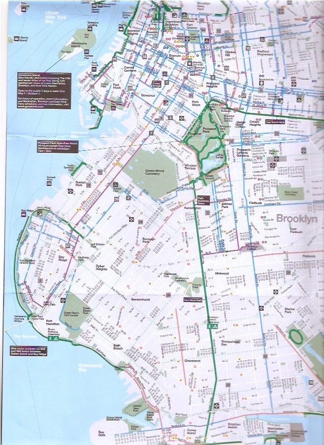

Prospect Park is a national landmark and an international model for urban parks.
Designed by the masterminds behind Central Park,
Prospect Park is home to the bulk of Brooklyn’s remaining indigenous forest,
as well as its only lake. But it’s not just the 585 acres of natural beauty
that draw millions of people each year –
this park is also brimming with attractions, events and activities.
Renting a bike is the best way to see the park and enjoy all that it has to offer.
Check out our tips for bike rental in Prospect Park,
along with a ride suggestion and attractions.
Designed and constructed over a thirty-year period (1865-1895) by Frederick Law Olmsted and Calvert Vaux,
the masterminds behind Central Park,
Prospect Park has blossomed into a premiere destination for Brooklyn visitors and residents alike.;
Prospect Park’s Top Attractions
We've pulled together some of the most popular things to see and do in the park.
If you're using Citi Bike, you can dock your bike whenever you want to explore on foot and pick up a new bike when you're ready to continue your ride.
The Long Meadow
Considered the longest stretch of unbroken meadow in any U.S. park, the Long Meadow is nearly one mile of open green space and runs along the entire west side of the park.
Carousel
During the summer months, this Carousel – featuring 53 magnificent hand-carved wooden horses, plus a lion, giraffe, deer and two dragon-pulled chariots – is one of the most visited attractions in the park.
LeFrak Center at Lakeside
Spanning 26 acres, this 2013 park restoration is one of the most popular destinations in the park.
In winter, it offers two state-of-the-art ice skating rinks;
in summer, it offers roller skating, boating and the Splash Pad for children’s water play.
Bluestone Cafe
Featuring indoor and outdoor dining, light fare and hearty dishes, Brooklyn Brewery beer and specialty wines, this year-round Lakeside restaurant offers something for everyone.
Litchfield Villa
Architecture buffs will delight in the 19th-century Italian facade, featuring ornate towers and cupolas, of this elegantly designed mansion. Once a private residence, it was condemned to make way for Prospect Park. Today it houses administrative offices for the Prospect Park Alliance.
